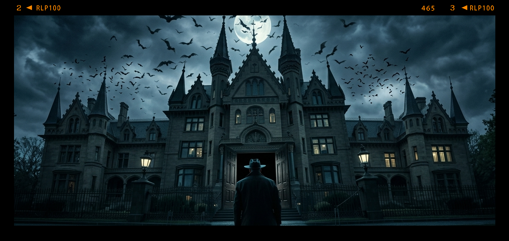

Você é um detetive chamado para investigar o assassinato de um influente empresário, Sr. Almeida, encontrado morto em sua mansão. O objetivo é descobrir quem é o culpado através de entrevistas e pistas.
Você chega à mansão e encontra o corpo do Sr. Almeida no escritório. Há sinais de luta e um vidro quebrado.
O corpo mostra uma ferida profunda na cabeça. No bolso do Sr. Almeida há um bilhete rasgado com uma letra desconhecida.
O escritório está revirado. Um cofre parece ter sido aberto recentemente. Há uma mancha de café próximo à mesa.
O bilhete contém apenas parte de uma mensagem: "...não confie em Marcos".
Dentro do cofre há documentos financeiros que indicam dívidas e transferências suspeitas.
A mancha de café contém traços de veneno. O bilhete revela uma possível ameaça.
Marcos parece nervoso. Ele alega estar no ginásio no momento do assassinato.
Você encontra um vídeo de segurança que mostra uma pessoa saindo às pressas da casa. É difícil identificar quem é.
Você confronta os suspeitos (Marcos, secretária e sócio). Reações revelam pequenas contradições.
O álibi de Marcos é falso; ninguém confirma sua presença no ginásio.
Você acusou Marcos: Ele é preso, mas evidências mostram que foi um álibi plantado; o verdadeiro culpado ainda não foi encontrado. Você passa noites acordado, tendo plena certeza de que no fim, não resolveu o caso, deixando um assassino a solta. Você falhou...
O vídeo combinado com as evidências do cofre e do veneno confirma que o sócio manipulou as finanças e planejou o assassinato.
Você acusou o sócio: Caso resolvido corretamente, você ganhou a conclusão perfeita. Com o caso concluido você finalmente pode descansar e continuar sua jornada resolvendo mais mistérios investigativos... Você Ganhou!